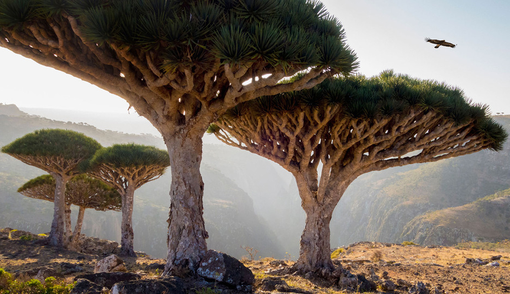
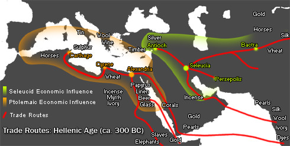
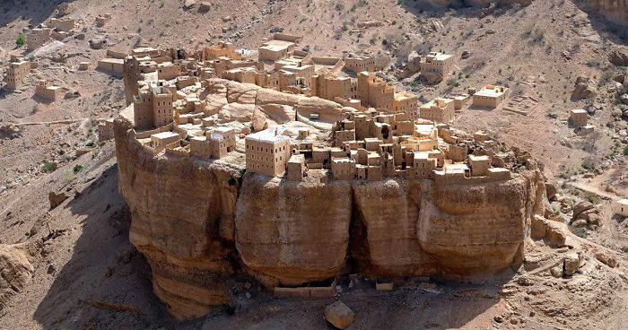

1. Ancient Architecture Old City of Sana'a
The Old City of Sana'a, a UNESCO World Heritage site, is renowned for its unique, multi-story tower houses made of rammed earth (a mix of clay and water) with intricate carvings and geometric designs. These buildings are distinctive due to their construction techniques and the decorative friezes. Shibam: Known as the "Manhattan of the Desert," Shibam is famous for its mudbrick skyscrapers, some of which are over 500 years old. This ancient city is one of the oldest examples of urban planning based on vertical construction.

2.Socotra Island
Flora and Fauna: Socotra Island, part of Yemen, is often referred to as the "Galápagos of the Indian Ocean" due to its extraordinary biodiversity. The island is home to unique plant species such as the Dragon's Blood Tree (Dracaena cinnabari) and the Socotra Desert Rose (Adenium obesum socotranum), which are not found anywhere else in the world. Dragon's Blood Tree: The tree’s unique appearance and the red sap it produces, known as "dragon's blood," have made it famous. The sap has been used for various purposes, including medicine and dye.
3. Historical Trade Routes
Frankincense and Myrrh: Yemen has been historically significant in the trade of frankincense and myrrh, aromatic resins that were highly valued in ancient times. The region was a crucial part of the Incense Route, a network of trade routes that connected the Mediterranean world with Eastern and Southern Africa, Arabia, and India.
Small Village in Yemen
The entire city is built atop a mountain, creating a breathtaking and awe-inspiring view
Yemen is a country with a rich history and unique cultural heritage that offers several distinct features not found elsewhere. Here are some of the most unique aspects of Yemen:
Unique Cuisine .
Traditional Handicrafts .
Historical Sites like Marib Dam .
Agricultural